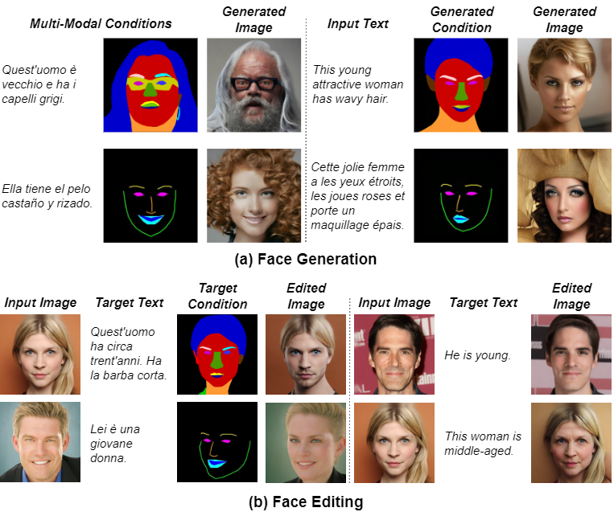
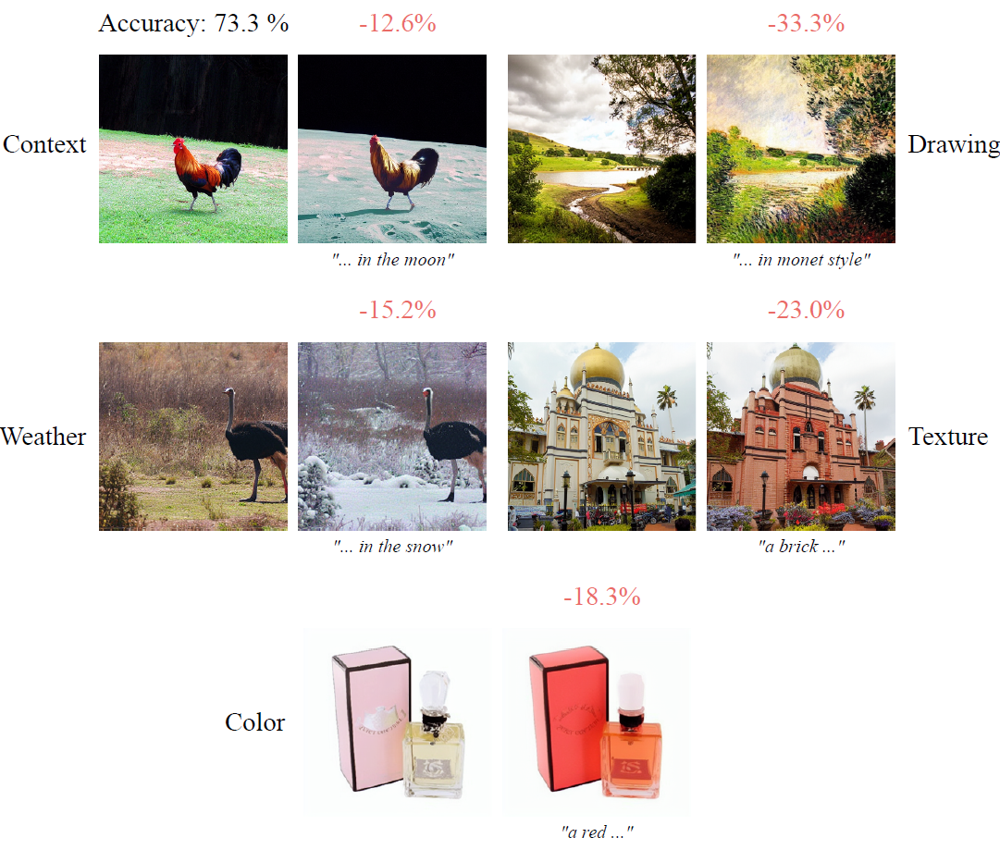
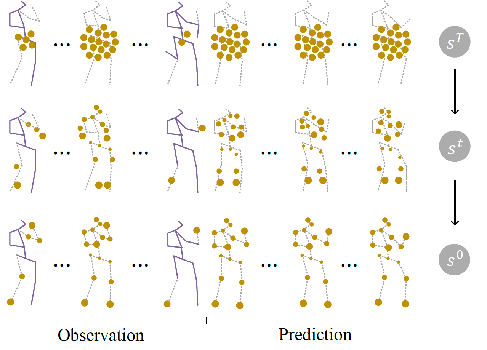

|
Mohammadreza Mofayezi I am a Computer Science PhD student at the University of Toronto and Vector Institute, supervised by Prof. Nandita Vijaykumar in the embARC Lab. Previously, I was fortunate to work as an Augmented Reality Developer at MadLlama game studio and conduct research under the supervision of Prof. Alexandre Alahi at EPFL, Prof. Adam Kortylewski at MPI, and do my B.Sc. thesis with Dr. Ehsaneddin Asgari at Sharif University of Technology. |

|
ResearchMy research focuses on efficient machine learning and computer vision. |
|

|
M3Face: A Unified Multi-Modal Multilingual Framework for Human Face Generation and Editing
Mohammadreza Mofayezi, Reza Alipour, Mohammad Ali Kakavand, Ehsaneddin Asgari arXiv, 2024 arXiv / bibtex By generating multi-modal conditions with a text prompt, we offer an option to use additional modalities without requiring them. |
|

|
Benchmarking Robustness to Text-Guided Corruptions
Mohammadreza Mofayezi and Yasamin Medghalchi CVPRW, 2023 arXiv / bibtex / code / poster Towards evaluating the robustness of image classifiers to text-guided corruptions generated with diffusion models. |
|

|
A generic diffusion-based approach for 3D human pose prediction in the wild
Saeed Saadatnejad, Ali Rasekh, Mohammadreza Mofayezi, Yasamin Medghalchi, Sara Rajabzadeh, Taylor Mordan, Alexandre Alahi ICRA, 2023 arXiv / bibtex / code / poster A unified diffusion-based framework for human motion prediction and reconstruction with incomplete and noisy data. |
|
Design and source code from Jon Barron's website. |